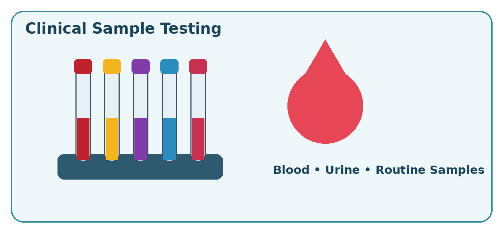
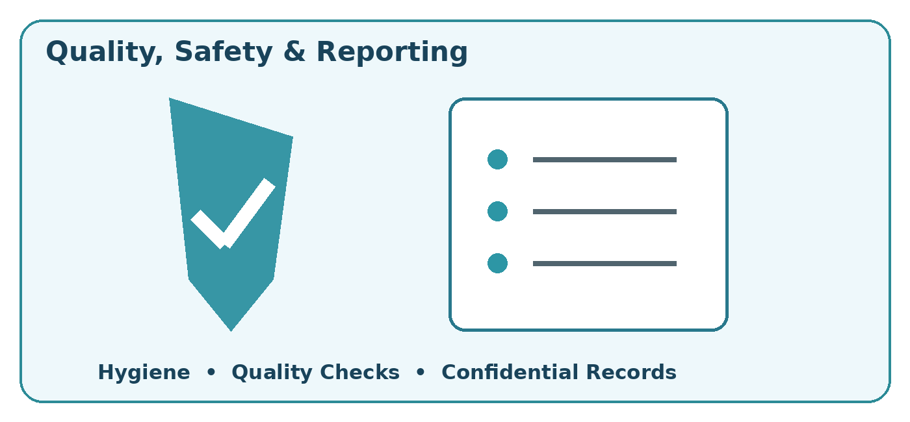

Haematology
Routine blood-related laboratory work, sample preparation and processing. Ask about CBC and hemogram availability.
Enquire about testingCLINICAL TESTING · TALOD, GUJARAT
Routine clinical laboratory services, organised sample processing and report handling—right here in Main Bazar, Talod.
For test availability, sample requirements and reporting times, speak with our team.

ABOUT THE LABORATORY
Shivam Clinical Laboratory is a clinical testing facility based in Talod, Gujarat.
Our routine workflow covers sample receipt, identification, preparation, testing support, documentation and report handling. Attention to suitable storage, clean work areas, maintained equipment and systematic records supports day-to-day operations.
Find us opposite Canara Bank, Mistri Market, Main Bazar. Contact the laboratory before visiting to confirm your test requirements and current opening hours.
Location & contact detailsTESTS & SERVICES
These are service categories. Contact the team to confirm the exact tests available, preparation requirements and charges.
Routine blood-related laboratory work, sample preparation and processing. Ask about CBC and hemogram availability.
Enquire about testingRoutine biochemical testing using laboratory analysers and established procedures, according to the available test menu.
Enquire about testingReceipt and processing of urine and other routine clinical specimens according to laboratory procedures.
Enquire about testingSample identification, labelling, sorting, centrifugation, separation, storage and preparation before analysis.
Enquire about samplesOrganisation of test-related records and preparation of completed reports for review and authorised release.
Ask about your reportRoutine equipment checks, quality-control records, stock monitoring and reagent expiry documentation.
Speak with the teamFACILITIES & WORKFLOW
Instruments and work areas are prepared before testing, cleaned and maintained regularly. The laboratory's workflow includes sample separation, designated storage and routine documentation.
Erma, Japan, as listed in the laboratory's equipment information.
Supports routine analytical work within the available test menu.
Centrifugation, consumables, sample movement registers and equipment logs.
FOR CLINICS & ORGANISATIONS
Formal laboratory requests can be discussed with our team. Scope, availability, sample arrangements and billing are confirmed before an agreement.
Enquiries from clinics and referring healthcare providers for routine or follow-up testing.
Discuss proposed test panels, participant numbers and scheduling, where such services are offered.
Ask about batch testing, sample processing and repeat assignments, subject to laboratory acceptance.
Tell us your organisation, required tests, approximate sample count and preferred dates. Our team will discuss the next steps.
QUALITY & SAFETY
Correct identification, clean work areas and confidential records are part of the laboratory's working approach.

BEFORE YOU VISIT
Call the laboratory for guidance specific to your prescribed tests.
Call +91 84878 71880Call the laboratory with the test name or your clinician's prescription. The team can confirm availability, charges and sample requirements.
Preparation varies by test. Confirm whether fasting or any special preparation is required. Do not change prescribed medication unless your clinician advises it.
Ask the laboratory about the reporting time and collection arrangements for your specific tests.
Please call to confirm current timings before travelling. Opening hours are not listed on this website.
Email your proposed requirements or call the laboratory. Service scope, scheduling and billing are discussed before a formal arrangement.
CONTACT SHIVAM
Search by name and address. Confirm the location with the laboratory before travelling.
Vipul Jashvantlal Patel